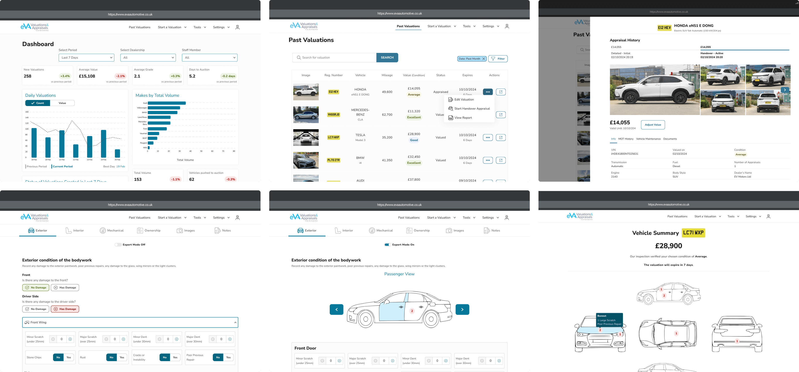
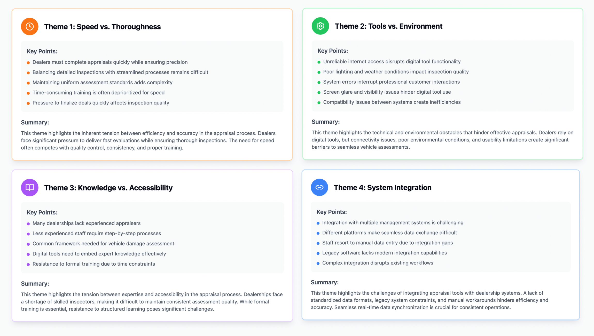
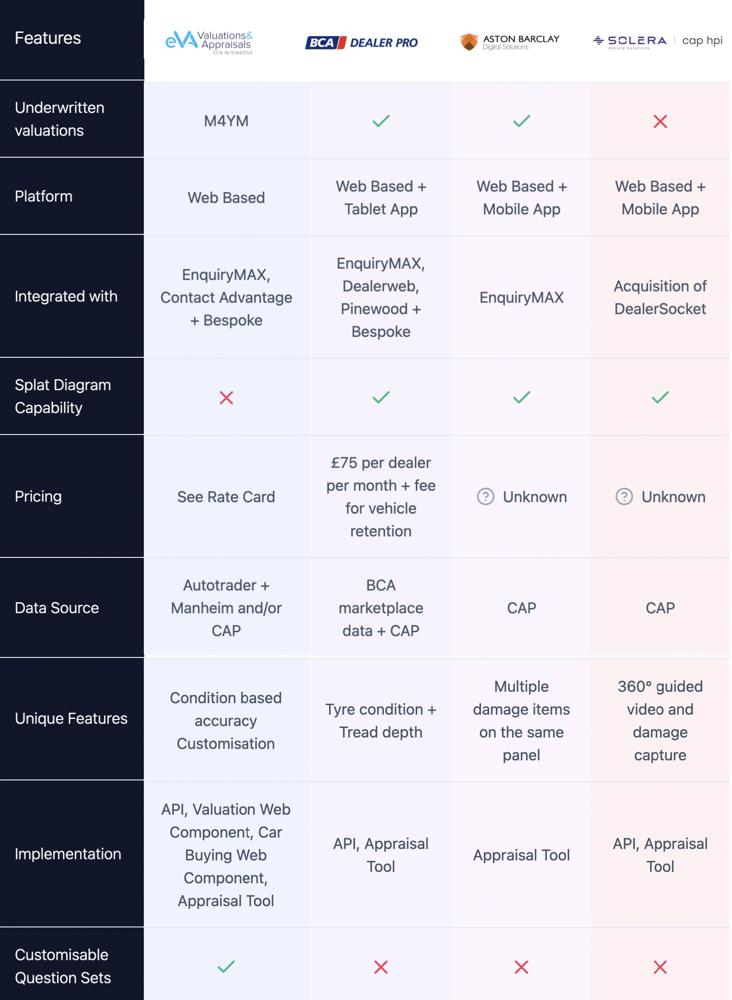
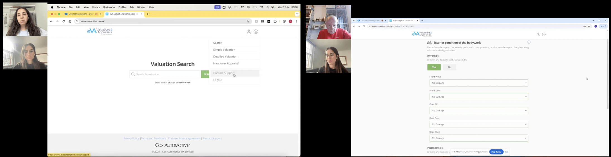
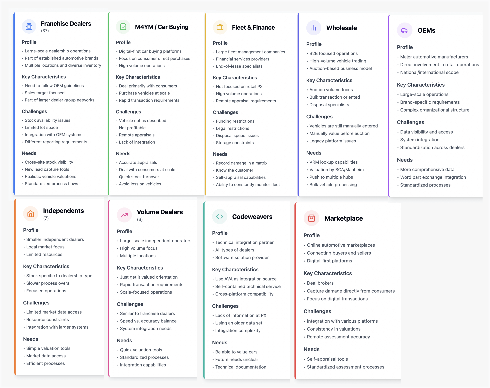
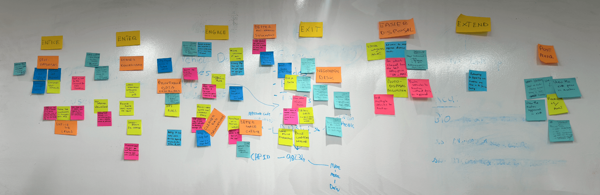

Redesigned Product
Original Product

The eVA app is a comprehensive vehicle valuation and appraisal platform designed to enhance the vehicle transaction experience for retailers, original equipment manufacturers (OEMs), and fleets. It facilitates accurate vehicle valuations, streamlines part-exchange processes, and offers flexible options for vehicle disposal, including direct purchase or auctioning. The app supports various account levels, allowing dealerships to assign roles such as sales managers, appraisers, and auction coordinators, each with tailored access and functionalities.
Redesign the eVA Web App
12 months
Cox Automotive – Enterprise
UX Designer
Mural, Hotjar, Dovetail, Userlytics, Figma
As a UX Designer, working closely with Product Managers, I set out to deeply understand the vehicle appraisal process used by dealers and contribute to shaping the digital strategy for eVA. Our goal was to identify how the existing platform supports users, uncover their pain points, and determine what they need from a digital inspection tool moving forward.
To ensure a user-centred redesign, I conducted a comprehensive research process, combining internal assessments, behavioural analytics, user feedback, field observations, competitor analysis, and usability testing. From this combination, we identified the following key findings:
These findings formed the foundation for the redesign strategy. Through this research, I aimed to inform key improvements and recommendations to streamline the process, enhance user satisfaction, and optimise the vehicle appraisal experience. By addressing these challenges, we sought to create a solution that not only improves efficiency but also better supports dealers and their businesses.
How might we create a more intuitive and efficient vehicle appraisal platform that addresses dealers' pain points while improving the overall inspection experience?
The research started with a heuristic evaluation and accessibility audit, revealing usability issues in the appraisal process, including hidden actions, poor visibility, and inefficient navigation. Key problems were a confusing action sequence, ambiguous buttons, no data loss safeguards, poor colour contrast and misleading colour hierarchy (primary colour matched the success colour, confusing actions and feedback).
To gain quantitative and qualitative insights, I leveraged Hotjar to track user interactions with the app. This analysis helped uncover usability patterns, friction points, and areas of confusion.
Additionally, I conducted in-app surveys to measure user satisfaction and Net Promoter Score (NPS). The results revealed an NPS score of -26, indicating significant user dissatisfaction and a clear need for a substantial redesign to address these concerns.
To further explore user needs, I conducted research workshops that included small-scale observational studies with inspectors at auction centres and dealerships to understand how they interact with the app in real-world settings.
I also conducted remote interviews with key stakeholders, including product managers, customer support teams, and sales representatives, to align the redesign with business objectives, priorities, and the long-term vision for the product.
Following this research, I first organised the data into an affinity map to identify relationships and group similar insights. Then, I coded recurring patterns across user behaviours, pain points, and business priorities.
This process revealed the following insights:
In parallel, I performed a competitor analysis to benchmark market positioning and industry standards. This helped assess how competitors handle similar challenges and provided inspiration for potential improvements in usability, features, and design patterns.
Finally, I conducted usability testing using Userlytics with five participants - dealers who had never used our app before. The objective was to assess how easily they could complete fundamental tasks and identify usability friction points.

Participants were asked to complete one overarching scenario with specific tasks, including initiating valuations, searching for vehicle information, and accessing previous appraisals. Throughout the test, participants provided real-time feedback, highlighting confusion points, usability issues, and potential improvements.
Our usability testing revealed several key areas for improvement that were affecting the user experience. These findings guided our redesign priorities and helped us address the most significant user challenges.
Unclear labels and industry jargon without explanations caused confusion, making it difficult for users to complete basic tasks.
Poor design patterns, including a limited search bar, checkboxes for non-interactive elements, and misused hamburger menu for actions.
Users struggle to track their journey, with critical actions hidden in menus. Key actions are unevenly placed, making some easy to find, while others are harder to access.
Addressing these critical pain points became central to our redesign strategy, forming the foundation for significant improvements in the user experience.
Based on the research insights, I created detailed personas representing key user groups who engage with the eVA platform. These personas helped us better understand the needs, goals, frustrations, and behaviors of the users, guiding the design process to address their specific pain points.
To dive deeper into understanding the users' motivations and emotional responses, we turned to the Empathy Map. This allowed us to visualise and synthesise what we learned about our users in a more human-centred way.
The user journey map was a critical tool to visualise how users interact with the app at each step of the process. From initiating a valuation to finalising the transaction, the journey highlighted pain points, including confusing navigation paths and lack of progress indicators.
We held a collaborative brainstorming session to identify key opportunities for enhancing the user experience. This session allowed us to pinpoint pain points, uncover unmet needs, and explore innovative solutions to streamline the appraisal process.
One of the critical issues identified during research was the inconsistent use of UI components throughout the application, creating several problems:
Components like tabs were being used for different purposes across the application, creating confusion about their function.
Inconsistency forced users to learn different mental models for the same visual elements, increasing cognitive load.
The product felt cobbled together from different systems rather than providing a cohesive experience.
To address these issues, I developed a structured UI component library that established clear standards and patterns:
Reduction in inconsistent usage
Decrease in design decision time
This design approach improved task completion, reduced errors, and ensured consistency in product identity and accessibility. I then created interactive Figma prototypes to simulate the vehicle appraisal process, helping validate the design before development.
I conducted usability testing with 5 users on both the original and redesigned versions to compare task completion, identify improvements, and validate design decisions.
Task completion rate
Time on task
Error Rate
User Satisfaction
The eVA Vehicle Appraisal redesign transformed a flawed platform into an intuitive solution by addressing key pain points through research. By focusing on user-centered design, including clearer navigation, visual damage reporting, contextual info, and customisable workflows, the redesign improved task speed, reduced errors, and increased satisfaction. It shows how thoughtful UX can meet business needs while simplifying daily operations for users.
In technical fields, diagrams and visual representations reduce cognitive load dramatically compared to text-heavy interfaces. One clear image can replace paragraphs of explanation.
The difference between a struggling product and a successful one often isn't flashy features - it's understanding the genuine human experience of users in their actual environment.
Let's have a talk so you can learn more about my work!
© Copyright Ioanna Lazaridou | All rights reserved.